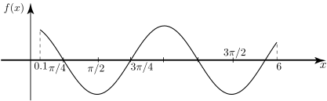

Long description: workbook132fig12

Alt text: The graph shows a smooth, periodic wave oscillating over the interval from zero to 6 on the horizontal axis and ranging between positive and negative values on the vertical axis.
This description was generated by AI and has not been verified by a human. If you spot an error, please use the feedback link below.
- The image displays a two-dimensional graph with a sinusoidal curve representing the function \(f(x)\).
- The horizontal axis is labeled with \(x\) and marked at several points, including \(0.1\text{pi}/4\), \(\text{pi}/2\), \(3\text{pi}/4\), \(3\text{pi}/2\), and \(6\).
- The vertical axis is labeled with \(f(x)\) and indicates the output values of the function.
- The curve starts at a positive value when \(x=0\) and decreases, reaching a minimum value near \(x=\text{pi}/2\).
- The curve then increases, passing through zero, and reaches a local maximum near \(x=3\text{pi}/4\).
- Following this maximum, the curve decreases again, passing through zero, and reaches a subsequent minimum value around \(x=3\text{pi}/2\).
- The visible portion of the wave continues to increase towards the right endpoint at \(x=6\).